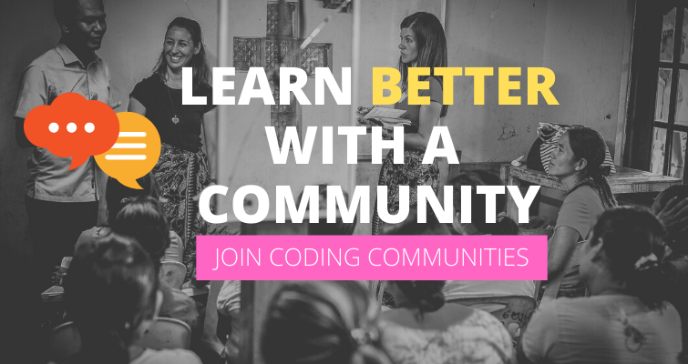

If you want to learn how to code, taking your first steps into coding might seem daunting and overwhelming. Here are the resources you can use to give yourself all the help you need, teach yourself new skills, and make this learning process fun and exciting.
This is a post I wish I read as a junior developer. If you get these foundation steps wrong you could end up wasting months or even years and worst-case scenario you give up on your journey to learn to code.
From my experience, learning any skill, including learning to code requires four main ingredients, namely: dedication, time, persistence and finally a direction.
The fourth ingredient “direction” is often the stumbling block for a lot of newbies learning to code, a lot of time and effort goes into learning programming languages and frameworks but in the end, they find it challenging to land the elusive first coding job. Why is this the case?
When you do get a job as a junior developer it feels like you are starting all over again with your learning. There are so many other tools you never came across and most of what you spent precious time learning are not even being used!
In this post, I will outline 7 best ways to learn to code that ensure that you are constantly heading in the right direction, have a solid attainable goal and removes any feeling of being overwhelmed during the process.
THE BEST WAY TO LEARN TO CODE
Learning to code personally changed my life and I have seen it do the same for a lot of my very close friends too. I have also made a lot of mistakes in the process and learnt my lessons.
The steps below are from my lessons learnt, the best way to learn to code without repeating my mistakes but instead enjoying the fruit of your hard work.
- Why you want yo learn to code
- Research local vacancies near you
- Build a learning roadmap
- Start online cording courses
- Build a comunity around you
- Apply for jobs before you are ready
- Document everything as you learn
- Final Thought
Let’s take a detailed look at these...
STEP 1: WHY YOU WANT TO LEARN TO CODE
The stronger your “why” the more chance you have of actually seeing this challenge through till the end. A quick warning, coding is not so simple especially in the beginning, you need a strong “why” to keep you from giving up.
I was lucky that I got this step right, I really needed financial freedom and poured everything into learn to code for that one purpose. Couch surfing and welcoming each new year broke was a huge motivating factor for change.
Below are some reasons most people learn to code:
- Want to earn more for financial freedom
- Have a side hustle idea want to create it yourself
- Hate your job and want a career in IT
- A friend is a programmer and you like their lifestyle
- Need a more flexible working
- Want a challenge & learn a new skill
From the very beginning know what your “why” is and make it very strong because there will come times when you want to give up, everything seems impossible and nothing works, this is when your why will be your drive to keep going.
STEP 2: RESEARCH LOCAL VACANCIES NEAR YOU
It is very easy to get carried away with buzzwords and in tech. there are many of them, there is a pressure to learn them all, attempting to learn all of them will cause burn-out and in any case a big waste of time.
The last thing you want is a nasty surprise…” you have spent 1-year learning programming frameworks that no company around you actually use”
You learnt a programming language because you heard it was cool, you chose a side in language war, and picked one that is not popular where you are based.
Before learning to write a single line of code, especially if you are learning to code to work as a developer, do research into what opportunities are around you. This will guide you better to choose what you should learn.
Go through local vacancies using job sites, see what is in demand and make decisions based on those facts and nothing else.
Below are some points to look out for in local vacancies:
- What programming language is consistently in demand
- What sort of salary expectation does it command
- What other skills are companies asking for
- Which frameworks are popular in your ideal companies
- Are there more frontend or backend roles
- Would you be happy to relocate for better opportunities
- etc.
Now you are better equipped to know which programming language to pour yourself into, or what framework as well which new buzzwords are worth your time and which to learn later down the line.
Don’t leave these things to chance, don’t choose sides in online battles e.g ( WordPress vs everything else or Ruby vs Python vs PHP ) make your decision based on market demand.
STEP 3: BUILD A LEARNING ROADMAP
I did not follow this step when I was a junior developer learning how to code and it possibly cost me years as a result, this is worth really focusing on and taking the right actions from the start.
A roadmap is essentially a list of actionable steps in your learning to guide you so that at any point you know where you are ( what you have learnt ) and can measure your progress against what you don’t yet know.
Anatomy of a good roadmap:
- Things to learn directly linked to your current/required role
- You can define items in this list ( know their use case )
- Have a way of tracking completed, current and future tasks
- It is within sight every day, at least workdays.
- Set a particular day/time weekly to take action on your list
Knowing what you don’t know is the first step in eliminating being overwhelmed.
As a junior developer, I was overwhelmed by how much I had to learn or felt was missing in my skillset, and due to panic I would jump to learning something new too frequently and in the process never really deep learning anything which caused more panic and vicious cycle carried on.
Years later I learnt how to create a roadmap and this completely changed the game, no need to be overwhelmed because I know it is in my plan and I will get to it.
Spend some time to know a list of things you don’t yet know, ask questions to know things you need to learn, make a plan and stick to it, be strict about adding new items in your roadmap, make sure it is absolutely required.
STEP 4: START ONLINE CODING COURSES
Now it is time for the fun to begin! You have identified what you should learn based on job adverts around where you live or where you plan to work, it is time to begin the actual learn to code aspect.
The biggest resource in the world “internet” is housing all kinds of courses, for all different levels, this is where you should begin, some people learn more through videos whilst others through written text, find an introductory level course and begin there.
Remember to stick to your roadmap, find courses that match what you are looking for, online course sites, youtube beginner videos, blog sites all have courses to help you learn to code.
Here are some course sites:
It is also very important to find a tutor that you bond with, there are different styles of teaching, so make sure to check different courses before you settle for one.
Whilst there are free courses that go in-depth, I wouldn’t shy away from actually paying for a course it is an investment in your future and one that will pay back thousand times over.
STEP 5: BUILD A COMMUNITY AROUND YOU

If you want to grow as a developer, there is a huge benefit of joining a developer community, this is a step every developer of all levels should take seriously.
Receiving and giving support is one of the advantages of community-based learning, being stuck on a coding problem for days can be frustrating, someone in a community has the answer to help you grow in your knowledge base.
Sharing best tools and code reviews are also ways of growing as a newbie developer, learning best practices and understanding how other developers approach a problem will help you when you get into working in a team at work.
It is not uncommon to land jobs or contracts this way too, in fact, this has been the case for myself and lots of other developers I know, someone in a community works at a company where they need your skillset.
Join communities and make every effort to be a part of it by contributing ideas and asking for help when you need it.
Here is a list of some developer communities:
- Women Who Code
- Indie Hackers
- HackerNews
- Code Newbie
- Product Hunt
- Meetup
- Hackernoon
- StackOverflow
- Dev.to
- DevRel Collective
- Hashnode
- Freecodecamp
STEP 6: APPLY FOR JOBS BEFORE YOU ARE READY
This is a secret weapon for any newbie developer and you should fight every instinct and go along with it.
Everything you know tells you to study and build amazing projects till you are ready then you go ahead and apply for a job, this is one of the biggest mistakes you could make. Here is why.
There is no such thing as “now I am ready” tech. Is constantly evolving and you will constantly learn new things, once you start the process of learning, begin the process of job hunt too.
When you have built something, update your CV with the tools used, put it out there and begin the job hunt process. The sooner you start the process the faster you will land a job.
Explain in interviews, where you are on your roadmap, and where you are headed, ask for tools they use that you need to learn, explain you can easily start those if they offer you the role.
Advantages of applying for jobs early:
- You have more chance of getting a job faster
- Get lots of practice doing tech. Interviews
- Get connections within interviewing companies
- Find if you are learning the right tools and amend if needed
- Build relationships with recruiters
Take away the fear factor and go for it, there is really nothing to lose, look at interviews as part of your learning process and make a note of lessons learnt from each interview.
STEP 7: DOCUMENT EVERYTHING AS YOU LEARN
The last but not least step in the best way to learn to code is documenting everything you do. Everything we do today can very easily be forgotten tomorrow, and this is not your fault it is just the way our memory works, storing information is easy, recall on the other hand is not so easy.
Form the habit from early on to make a note of things you just learnt, I have a folder which I commit to GitHub called “how-to” it contains things I have learnt over the years that I don’t trust my brain to recall when I need it.
For example, whilst installing a database on a new laptop I get an error, takes me some time to track what dependency I needed and how to fix the error. Now I put that error name in my how-to folder with the steps taken to solve it, if it comes up in the future and my brain fails me then I know where to go.
This will save you lots of googling time, no need having to do that twice! capture it and document it.
Make notes on how to install things, how to debug things, how to deploy things, how to test things, what commands needed to spin things up, tear things down etc.
Even more important make it public by blogging about them, this has added benefit because future employers will be able to get from it a sense of what you are capable of more than your CV could ever tell them.
FINAL THOUGHTS: THE BEST WAY TO LEARN TO CODE
Learning to code requires time and practice, but there are always ways of optimizing the whole process and that is what these steps will provide you with, so you get where you need to be faster.
Following these steps will not only help you be an amazing developer but will also reduce stress and the feeling of being overwhelmed by it all.
Below is the recap of steps required to learn to code:
- Identity and hold on tight to the reason you want to learn to code, this will help you never give up
- Base your learning on what the marking is looking for, use local vacancies where you live or location you want to work
- Use a roadmap to chart your course, track progress at all times, be strick not to add unnecessary things in it.
- Begin with online courses, find a tutor you bond with, find up to date courses, and begin there
- Join a community, learn to share problems, code reviews and build a relationship with possible future co-workers
- Apply for jobs before you are ready, don’t wait till a magical time to begin the job hunt, start early
- Document everything as you learn, don’t trust your brain to remember it all, write blogs as your revision notes.
P.S. Please share this post with others if you liked it! Thanks!